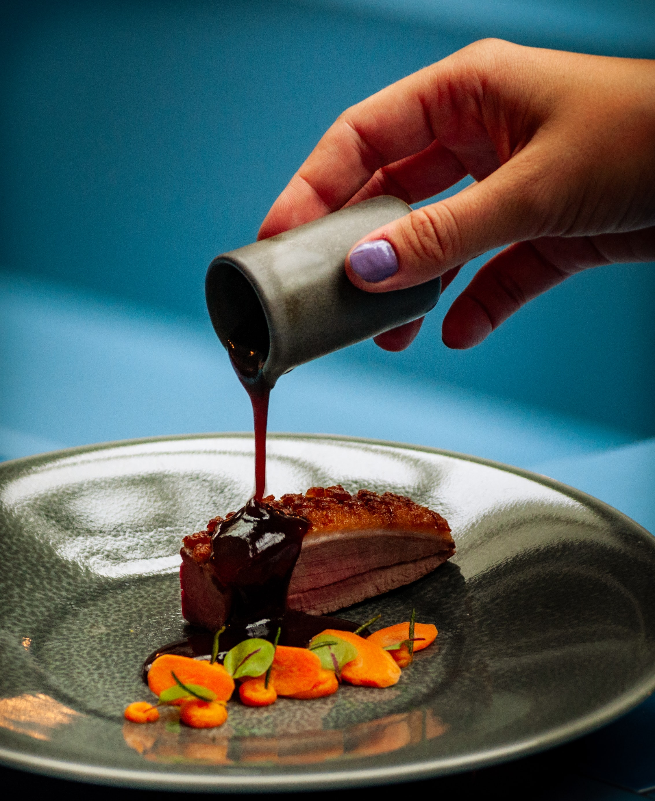

Gravy

Description
The one sauce to rule them all: gravy. Its essence is what every hearty dish wants. Umami and salty, full of richness, with a deep flavour profile.
Ingredients
- Root vegetables
- Red wine
- Tomato paste
- Herbs
Steps
- Sear vegetables golden brown from all sides
- Add tomato paste to sear as well
- Deglaze with red wine
- Add water and herbs
- Cook for one to three hours
- Strain the sauce into a new pot
- Reduce, reduce and reduce
Back to main page